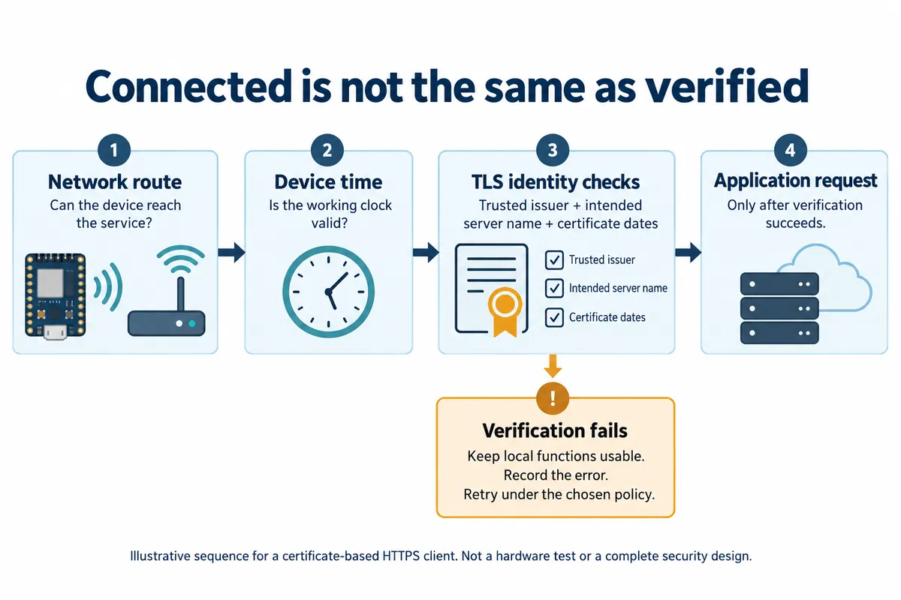

A connected display can work perfectly while attached to a developer's computer, then stop reaching its online service when powered from a wall adapter. If the network connects but the secure request fails, the missing piece may be the device's clock or certificate configuration. Repeating the request indefinitely will not repair either.
This matters before lending a prototype to someone who cannot open a terminal and fix it. It also matters beyond the first successful connection: the service's certificate will eventually change. On October 7, 2026, Let's Encrypt announced that its default certificate lifetime will become 64 days on February 10, 2027. For a team using that service, renewal and deployment deserve a named owner during the trial.
A demonstration over plain HTTP proves an exchange of test data; it does not prove server identity checking. Here is how to turn that gap into a small, useful integration test.

Reproduce the start your user will actually perform
In an August 18, 2022 MicroPython issue, a Pico W developer reported that a TLS connection worked from Thonny but failed when the board started on its own. A maintainer suggested checking the RTC. The author reported success after adding network time synchronization on August 19. This is a documented outcome for that setup, not a diagnosis of every TLS error.
A server certificate has a period during which it is valid. If a board believes it is years in the past, a currently valid certificate may appear not yet valid. The certificate's signed validity interval is part of the X.509 certificate model. Setting the clock is therefore more than making a timestamp look tidy.
For your trial, disconnect the development tools and perform a genuine power-on. Capture the device's date and time immediately before the secure connection attempt. Compare that run with the working bench run. Record the actual date, not only a message saying “time updated.” If time acquisition fails, decide what the device should show and which local functions can continue.
Keep the server's name separate from its network address
Another common shortcut is replacing a service hostname with an IP address after a DNS problem. That may get packets to a server while changing the identity the client is trying to verify. The intended name and the certificate must agree; reaching the same machine is not the whole check. RFC 9525 distinguishes DNS-name and IP-address identities. A certificate for one does not automatically establish the other.
The practical support record should include the configured hostname, whether it resolved, the connection stage and the error returned. A failure before an HTTP response is different from an HTTP error sent by the application. Keep tokens and private keys out of that record.
This confusion also appears in a Chinese V2EX discussion from August 6, 2024: the questioner could tolerate a browser warning on an internal service but found that programmatic API requests failed certificate checks. A browser action is not a configuration for the embedded client. The team still needs to define which issuer it trusts and which service identity it expects.
Confirm what the actual firmware verifies
The MicroPython TLS documentation describes CERT_REQUIRED, trusted CA certificates and server_hostname. It notes that correct device time is required for certificate validation and that supported options vary by implementation. On mbedTLS-based ports, CERT_OPTIONAL does not perform the validation that its name might suggest; CERT_REQUIRED is the relevant mode.
Do not infer the behaviour of an old urequests example from the latest documentation. Record the board firmware, installed request library and the configuration actually used. A request that succeeds with verification disabled has demonstrated connectivity, not that the intended server has been authenticated.
Ask the engineer to show both an accepted connection to the intended test service and a deliberately rejected connection under a controlled mismatch. Then repeat the valid case after a cold start. This gives the non-specialist owner something concrete to review: the device connects when its prerequisites are satisfied, and a failed identity check produces understandable behaviour rather than silently continuing.
Plan for the certificate to change while the prototype is away
The Let's Encrypt announcement concerns certificates issued by that authority; it is not a 64-day expiration rule for every device credential or root certificate. A client that correctly validates the service's certificate chain and identity does not automatically need reflashing at each ordinary server-certificate renewal. Test that assumption with your chosen service and client, rather than leaving it implicit.
If the implementation instead depends on one exact certificate or public key, its rotation behaviour needs explicit review. Likewise, the device needs a maintainable route for future changes to the trust material it uses. The server operator's renewal automation and the firmware team's update mechanism solve related but different problems.
Before a trial, agree on three ownership questions: who renews and deploys the service certificate, who can update the prototype's configuration or firmware, and who sees a failed connection while the device is with a user. A short handover note with those names is more useful than a single “HTTPS works” screenshot.
Make the failed connection understandable
For an information display, a reasonable trial behaviour might be to retain the last value, show that it is stale and record the reason a refresh failed. For a sensor uploader, it might be to retain unsent records within a defined limit. These are proposed behaviours; the right choice depends on what the user is relying on.
Exercise the valid startup, unavailable time source, wrong service identity and a renewed server certificate in a controlled test environment. Keep the other prototype functions running and note what the user sees. The result should establish the intended handover behaviour, without claiming a complete security assessment from a handful of connection tests.
If your prototype reaches the network but cannot reliably use its service outside the development setup, discuss the integration with Anvol. Bring the firmware and library versions, a redacted failure log and the expected behaviour when the service is unavailable.
This article is based on public documentation and a reported MicroPython issue. The illustration is new explanatory artwork; no new board test is claimed. References checked October 10, 2026.